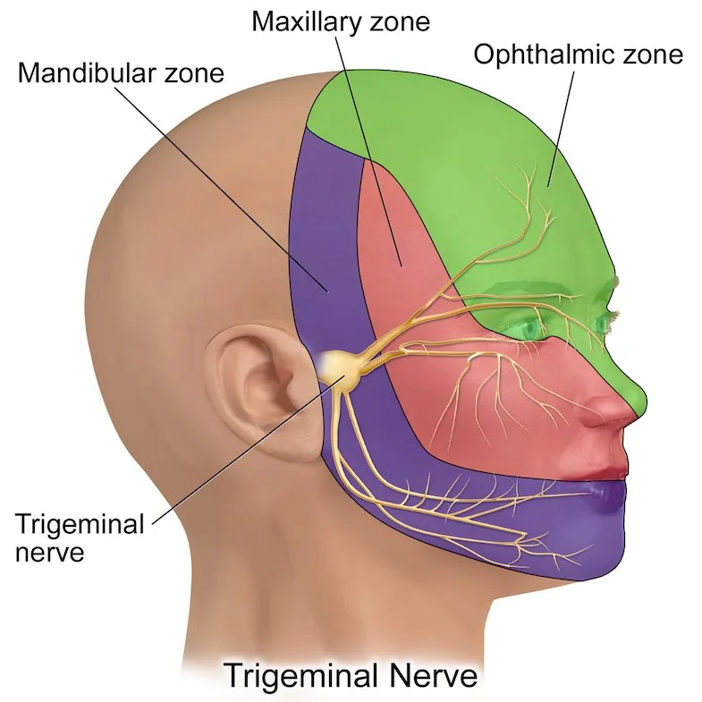
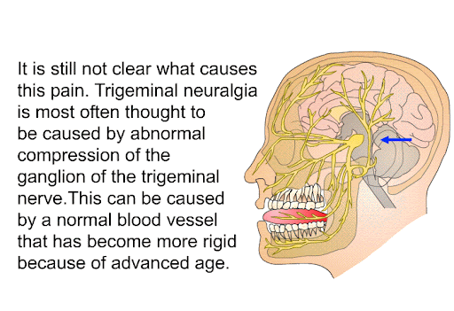
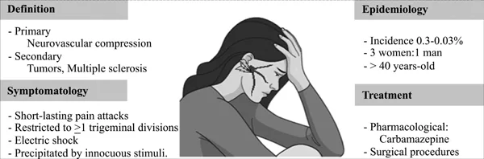
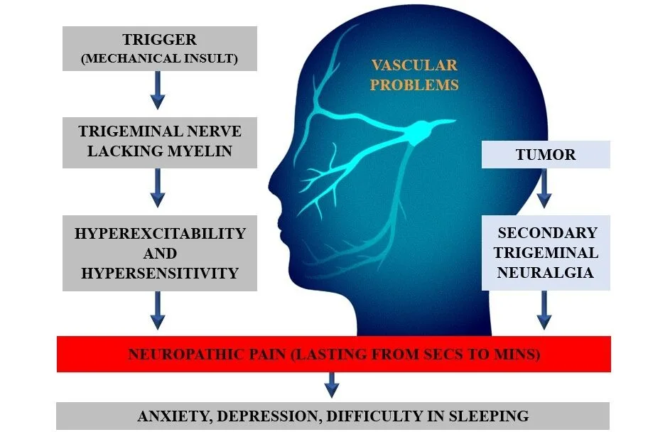

Expanded Nursing Uganda Explanation
Trigeminal neuralgia should be understood beyond a short definition. Link the concept to patient history, focused assessment, common risks, nursing priorities, documentation and evaluation of outcomes.
01 Branches of the Trigeminal Nerve
The trigeminal nerve has 3 divisions i.e
- The ophthalmic division(v1) that supplies the forehead , eyes, nose, meninges , paranasal sinuses and part of the nasal mucosa.
- The maxillary division(v2) supplies the upper jaw , teeth , lip , cheeks , hard palate , maxillary sinus and part of the nasal mucosa.
- The mandibular division(v3) supplies the lower jaw, teeth, lip, buccal mucosa, tongue, part of the external ear and the meninges.
Trigeminal neuralgia most commonly affects the second (V2) and third (V3) branches of the trigeminal nerve.
02 Causes of Trigeminal Neuralgia:
The exact cause of trigeminal neuralgia is not fully understood ; however, factors depend on the subtype. The International Classification of Headache Disorders, Third Edition (ICHD-3) categorizes Trigeminal Neuralgia (TN) into three main types:
1. Classic Trigeminal Neuralgia (Classic TN) :
- This is the most common form of TN .
- It is characterized by intense, sharp, electric-shock-like pain in the face, affecting the second (maxillary) or third (mandibular) branches of the trigeminal nerve.
- The primary cause is believed to be compression of the trigeminal nerve by a nearby blood vessel, often an artery.
2. Secondary Trigeminal Neuralgia (Secondary TN) :
This type of TN arises as a consequence of another underlying condition , such as:
- Tumors : A tumor located along the trigeminal nerve can compress and irritate it.
- Multiple Sclerosis (MS) : The demyelination process in MS can damage the nerve fibers, leading to pain.
- Other Neurological Disorders : Conditions like brainstem stroke or brain aneurysm can also contribute to secondary TN.
3. Idiopathic Trigeminal Neuralgia (Idiopathic TN) :
- This category refers to cases of TN where the underlying cause remains unknown .
- Despite extensive investigations, no identifiable factor like a blood vessel compression or other neurological condition is found to be responsible.
- Nerve Compression: Explanation: : Compression of the trigeminal nerve by nearby structures, often blood vessels, leading to irritation and pain signals.
- Example : Blood vessels impinging on the trigeminal nerve, causing compression and neuralgia.
- Demyelinating Plaques: Explanation: Damage to the myelin sheath surrounding the trigeminal nerve, disrupting normal nerve function.
- Example : Demyelination seen in conditions like multiple sclerosis.
- Herpes Virus Infection: Explanation: Activation or infection of the trigeminal nerve by the herpes virus, contributing to inflammation and pain.
- Example : Reactivation of the herpes simplex virus affecting the trigeminal nerve.
- Infection of the Teeth and Jaw: Explanation: Infections in the teeth or jaw leading to inflammation and irritation of the trigeminal nerve.
- Example : Dental infections spreading to the trigeminal nerve branches.
- Irritation from Flu-Like Illnesses: Explanation: Inflammatory response due to flu-like illnesses affecting the trigeminal nerve.
- Example : Increased sensitivity and irritation during or after a viral infection.
- Trauma of the Teeth or Jaw: Explanation: Physical injury to the teeth or jaw causing irritation of the trigeminal nerve.
- Example : Dental trauma resulting in nerve irritation and subsequent neuralgia.
- Aneurysm Causing Pressure on the Nerve: Explanation: Enlargement of an artery (aneurysm) putting pressure on the trigeminal nerve.
- Example : Compression of the nerve by an adjacent aneurysm.
- Tumor: Explanation: Presence of a tumor near the trigeminal nerve leading to compression and irritation.
- Example : Tumor growth impacting the trigeminal nerve.
- Arteriosclerotic Changes of an Artery Close to the Nerve: Explanation: Changes in artery walls close to the trigeminal nerve, potentially leading to compression.
- Example : Arteriosclerosis affecting vessels in proximity to the trigeminal nerve.
03 **Precipitating Factors of Pain:**
- Light Touch: Explanation: Even gentle touch or breeze on the face triggers severe pain due to the hypersensitivity of the trigeminal nerve.
- Example : Brushing against the face lightly causing intense pain.
- Eating: Explanation: Chewing and the mechanical process of eating can trigger neuralgic pain.
- Example : Pain occurring during or after meals.
- Swallowing: Explanation: The act of swallowing, which involves movement and muscle engagement in the face, can trigger pain.
- Example : Pain associated with swallowing liquids or food.
- Talking: Explanation: Articulating words and facial movements during speech may induce pain.
- Example : Pain occurring while engaging in conversation.
- Sneezing: Explanation: The sudden and forceful nature of sneezing can trigger intense facial pain.
- Example : Pain experienced during or after sneezing.
- Shaving: Explanation: The mechanical action of shaving involving contact with the face can lead to pain.
- Example : Pain triggered by shaving activities.
- Chewing Gum: Explanation: Repetitive jaw movements during gum chewing can aggravate trigeminal neuralgia.
- Example : Pain associated with chewing gum.
- Brushing the Teeth or Washing the Face: Explanation: Activities involving contact with the face, such as brushing teeth or washing, may cause pain.
- Example : Pain occurring during facial hygiene practices.
- Exposure to Wind: Explanation: Sensitivity to environmental factors, such as wind, leading to pain.
- Example : Pain triggered by exposure to windy conditions.
04 **Clinical Features of Trigeminal Neuralgia:**
1. Nature of the Condition:
- Trigeminal neuralgia is a chronic condition affecting the fifth cranial nerve.
2. Characteristics of Pain:
- Characterized by unilateral paroxysms of shooting and stabbing pain.
- Pain typically occurs in the area innervated by the trigeminal nerve branches (ophthalmic, maxillary, mandibular).
- Most commonly affects the second and third branches.
3. Description of Pain:
- Pain is often described as a burning, knife-like, or lightning-like shock.
- Occurs in the lips, upper or lower gums, forehead, or side of the nose.
4. Facial Presentation:
- Presents with severe facial pain.
5. Unilateral Nature:
- The pain is unilateral, affecting one side of the face.
6. Muscular Involvement:
- Associated with involuntary contraction of facial muscles.
7. Eye and Mouth Involvement:
- Can cause sudden closing of the eye or twitching of the mouth.
- Historically known as tic douloureux, referring to painful facial twitches.
8. Triggers for Pain Episodes:
- Pain can be spontaneous or initiated by activities such as chewing, talking, or touching the affected side of the face.
9. Impact on Daily Activities:
- Patients may alter behaviors, such as improper eating, neglect of hygiene, or wearing a cloth over the face.
- Social withdrawal due to pain-related discomfort.
10 Coping Mechanisms:
- Excessive sleeping may be adopted as a coping mechanism to deal with pain.
10. Risk of Suicide:
- There is a risk of suicide due to the disruption of the patient’s lifestyle caused by the intensity of pain.
11. Unpredictable Recurrence:
- Recurrences are unpredictable, varying in frequency and duration.
- Episodes can recur for several days, weeks, or months apart.
05 Pathophysiology of Trigeminal Neuralgia
Trigeminal neuralgia (TN) is characterized by intense, stabbing, electric shock-like pain in the distribution of one or more branches of the trigeminal nerve (CN V). It is broadly classified into two main forms: classical (idiopathic) and symptomatic (secondary).
Classical (Idiopathic) Trigeminal Neuralgia : In the classical form, a definitive underlying cause is often not identified. However, microvascular compression of the trigeminal nerve near its exit from the brainstem is the most widely accepted etiological factor.
- Vascular Compression : Aberrant arteries or veins (e.g., superior cerebellar artery) can compress the trigeminal nerve root, leading to demyelination of the nerve fibers. This demyelination disrupts normal nerve function and can cause ectopic impulse generation and aberrant cross-talk between different types of nerve fibers (Aβ, Aδ, and C fibers). The result is the paroxysmal pain characteristic of TN.
- Gasserian Ganglion Irritation : Some studies suggest that irritation or compression of the Gasserian ganglion, where the three branches of the trigeminal nerve converge, can also contribute to classical TN.
- Risk Factors : Classical TN is more prevalent in women and individuals over 50 years old.
Symptomatic (Secondary) Trigeminal Neuralgia : This form arises from an identifiable underlying condition that damages or compresses the trigeminal nerve.
- Space-occupying lesions : Tumors in the cerebellopontine angle (CPA) such as acoustic neuromas, meningiomas, or epidermoid cysts can compress the trigeminal nerve.
- Demyelination (Multiple Sclerosis) : MS plaques in the brainstem can damage the trigeminal nerve, leading to TN. TN is more common in people with MS, and it often presents bilaterally in these individuals.
- Other Structural Lesions : Aneurysms, arteriovenous malformations, or other vascular abnormalities can compress the nerve.
Differential Diagnosis
When evaluating a patient with suspected trigeminal neuralgia, it’s important to consider other conditions that can cause facial pain. The differential diagnosis includes:
- Dental Pathology : Toothaches, abscesses, or temporomandibular joint (TMJ) disorders can mimic TN pain.
- Herpes Zoster: Postherpetic neuralgia following a shingles outbreak can cause persistent facial pain.
- Nasopharyngeal and Paranasal Pathology: Sinus infections or tumors in the nasal cavity or sinuses can cause facial pain.
- Cervical Artery Dissection : Although rare, dissection of the internal carotid or vertebral artery can cause facial pain.
- Giant Cell Arteritis : This inflammatory condition can cause facial pain, particularly in older adults.
- Cluster Headaches and Migraines : These primary headache disorders can sometimes present with facial pain.
- Unstable Angina : In rare cases, pain from unstable angina can radiate to the jaw and face, mimicking TN.
- Trigeminal Neuropathy: Sensory loss or other neurological deficits may indicate a different underlying condition than TN
06 Investigations and Diagnosis of Trigeminal Neuralgia (TN)
Diagnosing TN primarily relies on a thorough medical history and physical examination, as there is no single definitive test.
1. Detailed Medical History :
- Pain Description : Ask about the character, intensity, duration, frequency, and triggers of the pain.
- Onset and Progression : Inquire about when the pain started, how it has changed over time, and whether it’s been getting worse.
- Previous Medical History : Information on previous illnesses, neurological conditions, or surgeries is relevant. Ask about current medications and supplements.
2. Physical Examination :
- Neurological Examination : Assess the patient’s reflexes, sensation, and motor function, particularly in the face and trigeminal nerve distribution.
- Palpation : The doctor may palpate the jaw and face to identify any areas of tenderness or trigger points.
3. Imaging Studies :
- Magnetic Resonance Imaging (MRI): An MRI scan can help rule out other neurological conditions that can cause facial pain, such as tumors, MS, or vascular malformations.
- Computed Tomography (CT) Scan : A CT scan can also help visualize the anatomy of the trigeminal nerve and surrounding structures.
07 Medical Management of Trigeminal Neuralgia:
Aims of Management
- Control Pain : Reduce the frequency and severity of pain attacks.
- Improve Quality of Life : Enable individuals to engage in daily activities without significant pain interference.
- Prevent Complications: Minimize the risk of potential complications such as depression, anxiety, and social isolation.
Pharmacologic Therapy:
1. Anticonvulsants : Carbamazepine (Tegretol) and oxcarbazepine (Trileptal) are the first-line medications for TN.
- Carbamazepine (Tegretol): Reduces transmission of impulses at nerve terminals, relieving pain. Adult dose at 100mg. Given with meals to minimize side effects.
- Monitoring and Side Effects: Patients are observed for side effects, including nausea, dizziness, drowsiness, and potential aplastic anemia. Long-term therapy requires monitoring for bone marrow depression.
2. Antidepressants : Tricyclic antidepressants like amitriptyline (Elavil) can also be effective in pain management.
3. Pain Relievers : Over-the-counter pain relievers like acetaminophen (Tylenol) or ibuprofen (Advil) may provide temporary relief.
4. Alternative Medications: Gabapentin and baclofen are utilized for pain management. If pain control remains inadequate, phenytoin (Dilantin) may be added as adjunctive therapy. Baclofen: This muscle relaxant may help reduce muscle spasms and pain.
Surgical Management:
5. Microvascular Decompression: This surgical procedure involves moving the blood vessel that is compressing the trigeminal nerve away from the nerve.
6. Percutaneous Radiofrequency: This procedure uses heat to destroy the trigeminal nerve fibers responsible for pain.
7. Gamma Knife Radiosurgery: Utilizes stereotactic magnetic resonance imaging (MRI) to identify the trigeminal nerve. Followed by gamma knife radiosurgery for precise intervention.
8. Glycerol Injection : A glycerol solution is injected into the trigeminal nerve, interrupting pain signals.
Nursing Management:
9. Identification of Triggers: Assist patients in recognizing triggers for facial pain (e.g., hot or cold stimuli, jarring motions). Teach strategies like using cotton pads and room temperature water for facial care.
10.Oral Hygiene: Instruct patients to rinse their mouths after eating when tooth brushing causes pain. Perform personal hygiene during pain-free intervals.
11. Dietary Guidance: Advise patients to consume food and fluids at room temperature. Suggest chewing on the unaffected side and opting for soft foods.
12. Emotional Well-being: Recognize and address anxiety, depression, and insomnia common in chronic pain conditions. Implement appropriate interventions and referrals.
13. Postoperative Care: Perform neurologic checks to assess facial motor and sensory deficits postoperatively.
14. Eye Care: Instruct patients not to rub the eye if sensory deficits occur post-surgery. Assess for eye irritation or redness and administer artificial tears if prescribed.
15. Physical Therapy : Specific exercises and techniques can help reduce muscle tension and improve facial movement.
16. Eating and Swallowing: Observe patients for any difficulty in eating and swallowing foods of different consistencies.
17. Lifestyle Modifications : Avoiding triggers, maintaining a regular sleep schedule, and reducing stress can help manage TN.
18. Cognitive-Behavioral Therapy (CBT) : CBT can teach coping skills for managing pain and stress.
19. Support Groups: Encourage patients to join support groups for emotional and informational support.
Nursing Interventions
Pain Management:
- Assess the intensity, duration, and triggers of trigeminal neuralgia pain.
- Administer prescribed medications and monitor their effectiveness.
- Implement non-pharmacological pain relief strategies, such as cold packs or distraction techniques.
- Monitor for side effects of pain medications.
Nutritional Support:
- Assess the patient’s ability to chew and swallow comfortably.
- Collaborate with a dietitian to develop a nutrition plan that accommodates the patient’s pain and dietary restrictions.
- Monitor weight changes and signs of malnutrition.
Facial Mobility and Self-Care:
- Evaluate the impact of pain on facial mobility and self-care activities.
- Collaborate with occupational therapy to develop strategies for maintaining facial hygiene.
- Provide assistance as needed for activities affected by pain.
Communication Challenges:
- Assess the patient’s ability to articulate words during and after painful episodes.
- Implement communication aids or alternative methods as necessary.
- Provide emotional support to address potential frustrations related to communication difficulties.
Psychosocial Support:
- Evaluate the patient’s emotional well-being and coping mechanisms.
- Offer counseling or refer to support groups to address the psychological impact of chronic pain.
- Encourage open communication about fears and concerns related to trigeminal neuralgia.
Patient Education:
- Educate the patient about trigeminal neuralgia, including potential triggers and lifestyle modifications.
- Provide information on prescribed medications, their purpose, and potential side effects.
- Discuss strategies for managing pain at home and when to seek medical attention.
Social Interaction:
- Assess the patient’s social activities and potential limitations due to pain.
- Encourage social engagement while considering the patient’s comfort level.
- Provide guidance on how to communicate the condition to friends and family.
Monitoring for Complications:
- Monitor for signs of complications such as malnutrition, aspiration, or skin breakdown.
- Collaborate with the healthcare team to address and prevent potential complications.
- They include Depression, Anxiety, Weight Loss, Social isolation, Sleep disturbances, Decreased facial sensation.
Medication Adherence:
- Assess the patient’s adherence to prescribed medications.
- Identify and address any barriers to medication compliance.
- Educate the patient on the importance of following the prescribed medication regimen.
Regular Follow-up:
- Schedule regular follow-up appointments to assess the patient’s overall condition and adjust the care plan as needed.
- Ensure continuity of care and collaboration among healthcare providers.
08 **Nursing care plan for Trigeminal Neuralgia**
- Assessment Nursing Diagnosis Goals/Expected Outcomes Intervention Rationale Evaluation
- Patient reports difficulty chewing and swallowing; weight loss of 3 kg in the last month Risk for imbalanced nutrition: less than body requirements related to difficulty chewing and swallowing – Maintain adequate nutritional intake within 1 week. – Patient reports improved ability to eat without pain. – Assess a patient’s nutritional status (weight, dietary intake). – Provide soft or pureed foods that are easier to chew and swallow. – Consult with a dietitian to ensure nutritional needs are met. – Painful episodes may lead to avoidance of certain foods, potentially resulting in inadequate nutrition. – Soft foods reduce discomfort during eating. – A dietitian can help design a nutritionally balanced meal plan. Patient maintained adequate nutritional intake within 1 week. Patient reported improved ability to eat without pain.
- Difficulty swallowing, reports of choking during meals Risk for Aspiration related to difficulty in swallowing. – Prevent aspiration during meals within 24 hours. – Patient swallows without difficulty or choking. – Assess swallowing ability before each meal. – Position the patient upright during meals and 30 minutes after. – Provide thickened liquids to reduce the risk of aspiration. – Facial pain may compromise the patient’s ability to swallow effectively, increasing the risk of aspiration. – Upright positioning reduces the risk of aspiration. – Thickened liquids are easier to control during swallowing. Prevent aspiration during meals within 24 hours Patient swallows without difficulty or choking
- Patient remains alone and avoids social interactions Social Isolation related to fear of pain during social interactions as evidenced by patients remaining alone and indoors. – Reduce social isolation within 2 weeks. – Patient participates in at least one social activity. – Encourage the patient to express feelings about pain and social isolation. – Refer the patient to a support group for individuals with chronic pain. – Plan gradual exposure to social situations, starting with a trusted friend or family member. – Anticipation of painful episodes may lead to withdrawal from social activities, increasing the risk of social isolation. – Expressing feelings can help reduce the emotional burden of isolation. – Support groups provide emotional support and understanding. – Patient reports feeling less isolated. – Participates in social activities without significant fear of pain.
- Patient stutters and struggles to articulate words during conversation Impaired Communication related to difficulty articulating words as evidenced by patient stuttering while talking. – Improve communication within 1 week. – Patient articulates words more clearly. – Assess the extent of communication difficulties. – Provide alternative communication methods (e.g., writing, gestures). – Encourage the patient to speak slowly and take breaks when needed. – Painful episodes may affect the patient’s ability to articulate words clearly, impacting communication. – Alternative methods ensure communication needs are met. – Speaking slowly and taking breaks can reduce frustration and pain. – Patient articulates words more clearly. – Uses alternative communication methods effectively.
- Patient reports difficulty sleeping, frequent awakenings due to pain Altered Sleep Pattern related to trigeminal neuralgia pain disrupting normal sleep cycles as evidenced by patient verbalizing difficulty getting sleep. – Improve sleep quality within 1 week. – Patient reports sleeping for at least 6 hours uninterrupted. – Assess the impact of pain on sleep patterns. – Encourage a bedtime routine with relaxation techniques (e.g., warm bath, deep breathing). – Administer prescribed pain medication 30 minutes before bedtime. – Chronic pain may interfere with the patient’s ability to achieve restful sleep, potentially leading to altered sleep patterns. – Relaxation techniques can promote sleep. – Pain medication can reduce pain levels and improve sleep quality. – Patient reports improved sleep quality. – Sleeps for at least 6 hours without interruption.
- Patient appears self-conscious, wears concealing clothes Disturbed Body Image related to altered facial expressions and communication difficulties as evidenced by patient putting on concealing clothes. – Improve body image within 2 weeks. – Patient expresses acceptance of appearance and interacts more confidently. – Encourage the patient to express feelings about body image. – Provide positive reinforcement and support during social interactions. – Refer to a counselor if needed to address self-esteem issues. – Changes in facial appearance and communication challenges may contribute to feelings of decreased self-esteem. – Expressing feelings can help process negative emotions. – Counseling can provide strategies to improve self-esteem. – Patient expresses acceptance of appearance. – Interacts more confidently in social settings.
09 Nursing Uganda Clinical Lens
Use Trigeminal neuralgia as a practical nursing topic, not only a memorized definition. Start with normal structure and function, then connect it to assessment findings and disease.
- What to understand first: define trigeminal neuralgia, identify the normal or expected pattern, then explain what changes when the patient is unwell.
- Why it matters in care: the nurse must recognize risk early, explain findings clearly, document accurately and know when to escalate.
- How to revise it: connect each point to assessment, nursing diagnosis or care problem, intervention, rationale and evaluation.
10 Assessment Guide
- Relevant inspection, palpation, movement, auscultation, vital signs or neurological checks.
- Normal findings, abnormal findings and what each abnormality may indicate.
- Patient history, risk factors and how the body system affects other systems.
11 Nursing Priorities, Rationales and Outcomes
- Use anatomy to explain symptoms and guide focused assessment.
- Recognize findings that need urgent escalation.
- Teach the patient using simple body-system language.
The rationale for these priorities is patient safety: nursing actions should prevent deterioration, reduce discomfort, support recovery and create clear evidence for the next caregiver.
- Expected outcome: The learner can explain normal function, identify abnormal signs and connect them to nursing action.
12 Patient Teaching and Revision Check
- Explain trigeminal neuralgia in simple language the patient or caregiver can repeat back.
- Teach warning signs, medicine or follow-up instructions, hygiene or lifestyle points where relevant.
- For exams, prepare a short answer using: definition, causes or risk factors, signs, assessment, management, complications and prevention.
- For ward practice, document baseline findings, actions taken, patient response and the plan for review.
Illustrations and Diagrams (18)






10 more diagrams available, open the lesson for full illustrations.
Related Video Lectures
Watch nursing lecture videos on YouTube for this topic. Opens in a new tab.
Watch on YouTubeExternal link: YouTube may use its own cookies and terms. Nursing Uganda is not affiliated with YouTube.